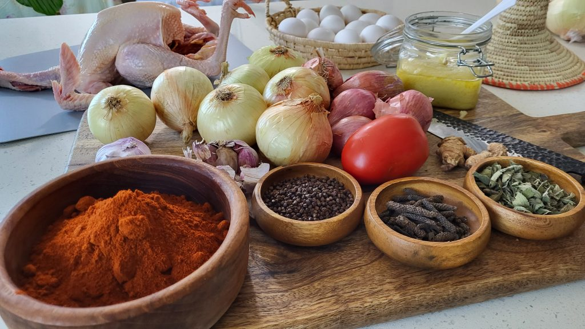

Doro wot is full of flavor and a beloved dish in my family. I’m excited to share my authentic recipe with you, which involves using berbere spices and traditionally cutting a whole chicken into 12 pieces. Although the process takes 4-6 hours, it’s definitely worth it for those who enjoy spicy chicken. You can serve up to 10 people with this dish and store leftovers in the fridge for 5-7 days and in the freezer for up to 3 months. Make sure to use clean utensils every time you scoop the stew to prevent it from spoiling. Additionally, I suggest putting on your favorite tunes, dancing around, and pampering yourself while you cook to make the experience more enjoyable.
I will walk you through the process step-by-step, so you can create your own authentic Doro Wot without breaking a sweat. So, let’s roll up our sleeves and get started!
